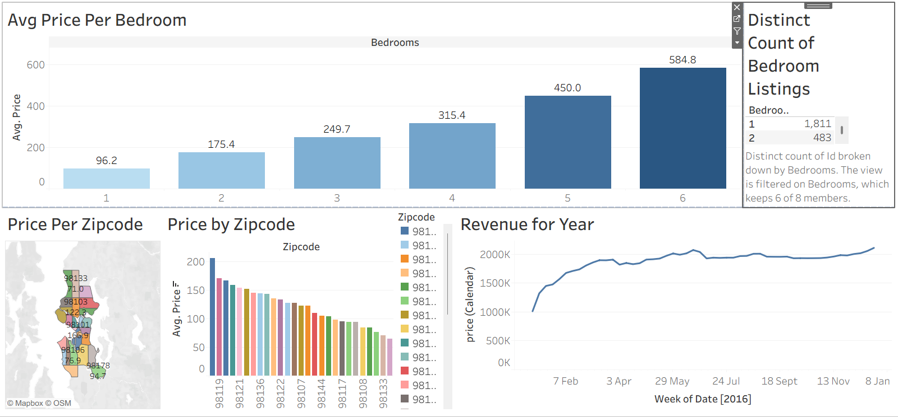

Airbnb Listings Dashboard (Tableau)

Project Overview
This Tableau visualization explores Airbnb listings, focusing on pricing patterns, geographical distribution, room types, review scores, and host activity.
Interactive Dashboard
View Tableau Dashboard →Dataset
airbnb-dataset.csvKey Insights
- Private rooms and entire homes dominate the market.
- Certain neighborhoods show significantly higher pricing.
- Superhosts maintain higher review scores on average.
- Booking demand clusters around central and tourist-heavy locations.
- Listings with higher reviews tend to show stable occupancy rates.
Why This Matters
Tableau allows deep visual exploration of geographic and pricing patterns, making it a powerful tool for stakeholders in hospitality & real estate.